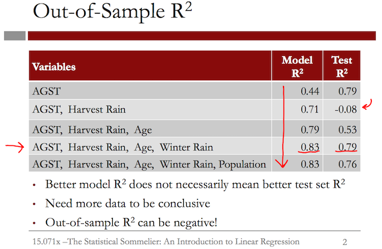

Unit 2 - Linear Regression
Table of Contents
- 1. The Statistical Sommelier: An Introduction to Linear Regression
- 1.1. Quick Question (1 point possible)
- 1.2. Quick Question (4 points possible)
- 1.3. Quick Question (1/1 point)
- 1.4. Video 4: Linear Regression in R
- 1.5. Quick Question (3 points possible)
- 1.6. Understanding the Model
- 1.7. Quick Question (2 points possible)
- 1.8. Video 6: Correlation and Multicollinearity
- 1.9. Quick Question (1 point possible)
- 1.10. Video 7: Making Predictions
- 1.11. Quick Question (1 point possible)
- 2. Moneyball: The Power of the Sports Analytics
- 2.1. Download the data
- 2.2. The Problem
- 2.3. Video 2: Making it to the Playoffs
- 2.4. Loading the data
- 2.5. Linear Regression Model
- 2.6. Quick Question (1 point possible)
- 2.7. Video 3: Predicting Runs
- 2.8. Refining the model
- 2.9. Allowing Runs Model
- 2.10. Quick Question (2 points possible)
- 2.11. Video 4: Using the Models to Make Predictions
Linear Regression topics. For the course "MITx: 15.071x The Analytics Edge".
1 The Statistical Sommelier: An Introduction to Linear Regression
1.1 Quick Question (1 point possible)
The plots below show the relationship between two of the independent variables considered by Ashenfelter and the price of wine.
What is the correct relationship between harvest rain, average growing season temperature, and wine prices?
1.1.1 Answer
More harvest rain is associated with a lower price, and higher temperatures is associated with a higher price
1.1.1.1 Explanation
The plots show a positive trend between average growing season temperature and the wine price. While the trend is less clear between harvest rain and price, there is a slight negative association.
1.2 Quick Question (4 points possible)
The following figure shows three data points and the best fit line
y = 3x + 2.
The x-coordinate, or "x", is our independent variable and the y-coordinate, or "y", is our dependent variable.
Please answer the following questions using this figure.
x <- c(1, 0, 1); y <- c(8, 2, 2); beta0 <- rep(mean(y), 3) yHat <- (3 * x) + 2 eSqModel <- (y - yHat)^2 eSqBL <- (y - beta0)^2 data <- data.frame(x, y, yHat, eSqModel, eSqBL) writeLines("\n The baseline prediction") beta0[1] writeLines("\n The SSE for the model yHat") sum(data$eSqModel) writeLines("\n The SSE for the Baseline") sum(data$eSqBL) writeLines("\n The R^2 of the model") 1 - (sum(data$eSqModel) / sum(data$eSqBL))
The baseline prediction
[1] 4
The SSE for the model yHat
[1] 18
The SSE for the Baseline
[1] 24
The R^2 of the model
[1] 0.25
1.2.1 Question a
What is the baseline prediction?
1.2.1.1 Answer
The baseline prediction is the average value of the dependent variable. Since our dependent variable takes values 2, 2, and 8 in our data set, the average is (2+2+8)/3 = 4.
1.2.2 Question b
What is the Sum of Squared Errors (SSE)?
1.2.2.1 Answer
The SSE is computed by summing the squared errors between the actual values and our predictions. For each value of the independent variable (x), our best fit line makes the following predictions:
If x = 0, y = 3(0) + 2 = 2,
If x = 1, y = 3(1) + 2 = 5.
Thus we make an error of 0 for the data point (0,2), an error of 3 for the data point (1,2), and an error of 3 for the data point (1,8). So we have
SSE = 0² + 3² + 3² = 18.
1.2.3 Question c
What is the Total Sum of Squares (SST)?
1.2.3.1 Answer
The SST is computed by summing the squared errors between the actual values and the baseline prediction. From the first question, we computed the baseline prediction to be 4. Thus the SST is:
SST = (2 - 4)² + (2 - 4)² + (8 - 4)² = 24.
1.2.4 Question d
What is the R² of the model?
1.2.4.1 Answer
The R² formula is:
R² = 1 - SSE/SST
Thus using our answers to the previous questions, we have that
R² = 1 - 18/24 = 0.25.
1.3 Quick Question (1/1 point)
Suppose we add another variable, Average Winter Temperature, to our model to predict wine price. Is it possible for the model's R² value to go down from 0.83 to 0.80?
1.3.1 Answer
The model's R² value can never decrease from adding new variables to the model. This is due to the fact that it is always possible to set the coefficient for the new variable to zero in the new model. However, this would be the same as the old model. So the only reason to make the coefficient non-zero is if it improves the R² value of the model, since linear regression picks the coefficients to minimize the error terms, which is the same as maximizing the R².
1.4 Video 4: Linear Regression in R
Before starting this video, please download the datasets wine.csv and wine_test.csv. Save them to a folder on your computer that you will remember, and in R, navigate to this folder (File->Change dir… on a PC, and Misc->Change Working Directory on a Mac). This data comes from Liquid Assets.
A script file containing all of the R commands used in this lecture can be downloaded here.
1.4.1 Download the data sets
In this part we can download the data
library(parallel) if(!file.exists("../data")) { dir.create("../data") } fileUrl <- c("https://courses.edx.org/asset-v1:MITx+15.071x_2a+2T2015+type@asset+block/wine.csv", "https://courses.edx.org/asset-v1:MITx+15.071x_2a+2T2015+type@asset+block/wine_test.csv") fileName <- c("wine.csv", "wine_test.csv") dataPath <- "../data" for(i in 1:2) { filePath <- paste(dataPath, fileName[i], sep = "/") if(!file.exists(filePath)) { download.file(fileUrl[i], destfile = filePath, method = "curl") } } list.files("../data")
[1] "AnonymityPoll.csv" "BoeingStock.csv" "CPSData.csv" [4] "CocaColaStock.csv" "CountryCodes.csv" "GEStock.csv" [7] "IBMStock.csv" "MetroAreaCodes.csv" "ProcterGambleStock.csv" [10] "README.md" "USDA.csv" "WHO.csv" [13] "WHO_Europe.csv" "baseball.csv" "mvtWeek1.csv" [16] "wine.csv" "wine_test.csv"
1.4.2 Load the wine data set
writeLines(" Loading data into their data frames.") wine <- read.table("../data/wine.csv", sep = ",", header = TRUE) str(wine) summary(wine)
Loading data into their data frames.
'data.frame': 25 obs. of 7 variables:
$ Year : int 1952 1953 1955 1957 1958 1959 1960 1961 1962 1963 ...
$ Price : num 7.5 8.04 7.69 6.98 6.78 ...
$ WinterRain : int 600 690 502 420 582 485 763 830 697 608 ...
$ AGST : num 17.1 16.7 17.1 16.1 16.4 ...
$ HarvestRain: int 160 80 130 110 187 187 290 38 52 155 ...
$ Age : int 31 30 28 26 25 24 23 22 21 20 ...
$ FrancePop : num 43184 43495 44218 45152 45654 ...
Year Price WinterRain AGST HarvestRain
Min. :1952 Min. :6.205 Min. :376.0 Min. :14.98 Min. : 38.0
1st Qu.:1960 1st Qu.:6.519 1st Qu.:536.0 1st Qu.:16.20 1st Qu.: 89.0
Median :1966 Median :7.121 Median :600.0 Median :16.53 Median :130.0
Mean :1966 Mean :7.067 Mean :605.3 Mean :16.51 Mean :148.6
3rd Qu.:1972 3rd Qu.:7.495 3rd Qu.:697.0 3rd Qu.:17.07 3rd Qu.:187.0
Max. :1978 Max. :8.494 Max. :830.0 Max. :17.65 Max. :292.0
Age FrancePop
Min. : 5.0 Min. :43184
1st Qu.:11.0 1st Qu.:46584
Median :17.0 Median :50255
Mean :17.2 Mean :49694
3rd Qu.:23.0 3rd Qu.:52894
Max. :31.0 Max. :54602
1.4.3 Building the models
Lets begin with a model with only one variable:
1.4.3.1 One variable model
writeLines("\n :: Linear Regression (one variable)") model1 <- lm(Price ~ AGST, data = wine) summary(model1) writeLines("\n :: Sum of Squared Errors:") model1$residuals writeLines("\n :: Calculating SSE:") SSE = sum(model1$residuals^2) SSE
:: Linear Regression (one variable)
Call:
lm(formula = Price ~ AGST, data = wine)
Residuals:
Min 1Q Median 3Q Max
-0.78450 -0.23882 -0.03727 0.38992 0.90318
Coefficients:
Estimate Std. Error t value Pr(>|t|)
(Intercept) -3.4178 2.4935 -1.371 0.183710
AGST 0.6351 0.1509 4.208 0.000335 ***
---
Signif. codes: 0 '***' 0.001 '**' 0.01 '*' 0.05 '.' 0.1 ' ' 1
Residual standard error: 0.4993 on 23 degrees of freedom
Multiple R-squared: 0.435, Adjusted R-squared: 0.4105
F-statistic: 17.71 on 1 and 23 DF, p-value: 0.000335
:: Sum of Squared Errors:
1 2 3 4 5 6
0.04204258 0.82983774 0.21169394 0.15609432 -0.23119140 0.38991701
7 8 9 10 11 12
-0.48959140 0.90318115 0.45372410 0.14887461 -0.23882157 -0.08974238
13 14 15 16 17 18
0.66185660 -0.05211511 -0.62726647 -0.74714947 0.42113502 -0.03727441
19 20 21 22 23 24
0.10685278 -0.78450270 -0.64017590 -0.05508720 -0.67055321 -0.22040381
25
0.55866518
:: Calculating SSE:
[1] 5.734875
Beside it is a number labeled Adjusted R-squared. In this case, it's 0.41. This number adjusts the R-squared value to account for the number of independent variables used relative to the number of data points. Multiple R-squared will always increase if you add more independent variables.
But Adjusted R-squared will decrease if you add an independent variable that doesn't help the model. This is a good way to determine if an additional variable should even be included in the model.
We can compute the Sum of Squared Errors, or SSE, by taking the sum(model1$residuals^2). If we type SSE and hit Enter, we can see that our sum of squared errors is 5.73.
1.4.3.2 Model with two variables
writeLines("\n :: Linear Regression (two variables)") model2 = lm(Price ~ AGST + HarvestRain, data=wine) summary(model2) writeLines("\n :: Sum of Squared Errors") SSE = sum(model2$residuals^2) writeLines("\n :: Calculating the SSE") SSE
:: Linear Regression (two variables)
Call:
lm(formula = Price ~ AGST + HarvestRain, data = wine)
Residuals:
Min 1Q Median 3Q Max
-0.88321 -0.19600 0.06178 0.15379 0.59722
Coefficients:
Estimate Std. Error t value Pr(>|t|)
(Intercept) -2.20265 1.85443 -1.188 0.247585
AGST 0.60262 0.11128 5.415 1.94e-05 ***
HarvestRain -0.00457 0.00101 -4.525 0.000167 ***
---
Signif. codes: 0 '***' 0.001 '**' 0.01 '*' 0.05 '.' 0.1 ' ' 1
Residual standard error: 0.3674 on 22 degrees of freedom
Multiple R-squared: 0.7074, Adjusted R-squared: 0.6808
F-statistic: 26.59 on 2 and 22 DF, p-value: 1.347e-06
:: Sum of Squared Errors
:: Calculating the SSE
[1] 2.970373
And if you look at the R-squared near the bottom of the output, you can see that this variable really helped our model.
Our Multiple R-squared and Adjusted R-squared both increased significantly compared to the previous model.
If we type SSE, we can see that the sum of squared errors for model2 is 2.97, which is much better (less) than the sum of squared errors for model1.
1.4.3.3 Model with all variables
writeLines("\n :: Linear Regression (all variables)") model3 <- lm(Price ~ AGST + HarvestRain + WinterRain + Age + FrancePop, data=wine) summary(model3) writeLines("\n :: Sum of Squared Errors") SSE <- sum(model3$residuals^2) writeLines("\n :: Calculating the SSE for all variable model") SSE
:: Linear Regression (all variables)
Call:
lm(formula = Price ~ AGST + HarvestRain + WinterRain + Age +
FrancePop, data = wine)
Residuals:
Min 1Q Median 3Q Max
-0.48179 -0.24662 -0.00726 0.22012 0.51987
Coefficients:
Estimate Std. Error t value Pr(>|t|)
(Intercept) -4.504e-01 1.019e+01 -0.044 0.965202
AGST 6.012e-01 1.030e-01 5.836 1.27e-05 ***
HarvestRain -3.958e-03 8.751e-04 -4.523 0.000233 ***
WinterRain 1.043e-03 5.310e-04 1.963 0.064416 .
Age 5.847e-04 7.900e-02 0.007 0.994172
FrancePop -4.953e-05 1.667e-04 -0.297 0.769578
---
Signif. codes: 0 '***' 0.001 '**' 0.01 '*' 0.05 '.' 0.1 ' ' 1
Residual standard error: 0.3019 on 19 degrees of freedom
Multiple R-squared: 0.8294, Adjusted R-squared: 0.7845
F-statistic: 18.47 on 5 and 19 DF, p-value: 1.044e-06
:: Sum of Squared Errors
:: Calculating the SSE for all variable model
[1] 1.732113
we can again see that the Multiple R-squared and Adjusted R-squared have both increased.
Let's now compute the sum of squared errors for this new model. SSE equals the sum(model3$residuals^2).
And if we type SSE, we can see that the sum of squared errors for model3 is 1.7, even better than before.
Another way to build the model using all variables can be written as:
writeLines("\n :: Linear Regression (all variables)") model3 <- lm(Price ~ ., data=wine) summary(model3) writeLines("\n :: Sum of Squared Errors") SSE <- sum(model3$residuals^2) writeLines("\n :: Calculating the SSE for all variable model") SSE
:: Linear Regression (all variables)
Call:
lm(formula = Price ~ ., data = wine)
Residuals:
Min 1Q Median 3Q Max
-0.48179 -0.24662 -0.00726 0.22012 0.51987
Coefficients: (1 not defined because of singularities)
Estimate Std. Error t value Pr(>|t|)
(Intercept) 7.092e-01 1.467e+02 0.005 0.996194
Year -5.847e-04 7.900e-02 -0.007 0.994172
WinterRain 1.043e-03 5.310e-04 1.963 0.064416 .
AGST 6.012e-01 1.030e-01 5.836 1.27e-05 ***
HarvestRain -3.958e-03 8.751e-04 -4.523 0.000233 ***
Age NA NA NA NA
FrancePop -4.953e-05 1.667e-04 -0.297 0.769578
---
Signif. codes: 0 '***' 0.001 '**' 0.01 '*' 0.05 '.' 0.1 ' ' 1
Residual standard error: 0.3019 on 19 degrees of freedom
Multiple R-squared: 0.8294, Adjusted R-squared: 0.7845
F-statistic: 18.47 on 5 and 19 DF, p-value: 1.044e-06
:: Sum of Squared Errors
:: Calculating the SSE for all variable model
[1] 1.732113
Using model3 <- lm(Price ~ ., data=wine) with a dot (.) indicate to use all variables.
1.5 Quick Question (3 points possible)
In R, use the dataset wine.csv to create a linear regression model to predict Price using HarvestRain and WinterRain as independent variables.
writeLines("\n :: Linear Regression (HarvestRain and WinterRain variables)") modelQQ3 <- lm(Price ~ HarvestRain + WinterRain, data=wine) summary(modelQQ3) writeLines("\n :: Sum of Squared Errors") SSE <- sum(modelQQ3$residuals^2) writeLines("\n :: Calculating the SSE for all variable model") SSE
:: Linear Regression (HarvestRain and WinterRain variables)
Call:
lm(formula = Price ~ HarvestRain + WinterRain, data = wine)
Residuals:
Min 1Q Median 3Q Max
-1.0933 -0.3222 -0.1012 0.3871 1.1877
Coefficients:
Estimate Std. Error t value Pr(>|t|)
(Intercept) 7.865e+00 6.616e-01 11.888 4.76e-11 ***
HarvestRain -4.971e-03 1.601e-03 -3.105 0.00516 **
WinterRain -9.848e-05 9.007e-04 -0.109 0.91392
---
Signif. codes: 0 '***' 0.001 '**' 0.01 '*' 0.05 '.' 0.1 ' ' 1
Residual standard error: 0.5611 on 22 degrees of freedom
Multiple R-squared: 0.3177, Adjusted R-squared: 0.2557
F-statistic: 5.122 on 2 and 22 DF, p-value: 0.01492
:: Sum of Squared Errors
:: Calculating the SSE for all variable model
[1] 6.925756
Using the summary output of this model, answer the following questions:
What is the "Multiple R-squared" value of your model?
1.5.1 Answer
In R, create the model by typing the following line into your R console:
modelQQ4 = lm(Price ~ HarvestRain + WinterRain, data=wine)
Then, look at the output of summary(modelQQ4). The Multiple R-squared is listed at the bottom of the output, and the coefficients can be found in the coefficients table.
1.6 Understanding the Model
In the summary of the models we can see some other columns, the model coefficients and other columns.
The remaining columns help us to determine if a variable should be included in the model, or if its coefficient is significantly different from 0.
A coefficient of 0 means that the value of the independent variable does not change our prediction for the dependent variable.
If a coefficient is not significantly different from 0, then we should probably remove the variable from our model since it's not helping to predict the dependent variable.
The standard error column gives a measure of how much the coefficient is likely to vary from the estimate value.
The t value is the estimate divided by the standard error. It will be negative if the estimate is negative and positive if the estimate is positive. The larger the absolute value of the t value, the more likely the coefficient is to be significant.
So we want independent variables with a large absolute value in this column.
The last column of numbers gives a measure of how plausible it is that the coefficient is actually 0, given the data we used to build the model.
The less plausible it is, or the smaller the probability number in this column, the less likely it is that our coefficient estimate is actually 0.
This number will be large if the absolute value of the t value is small, and it will be small if the absolute value of the t value is large. We want independent variables with small values in this column.
This is a lot of information, but the easiest way in R to determine if a variable is significant is to look at the stars at the end of each row.
The star coding scheme is explained at the bottom of the Coefficients table.
Three stars is the highest level of significance and corresponds to a probability value less than 0.001, or the smallest possible probabilities.
Two stars is also very significant and corresponds to a probability between 0.001 and 0.01.
One star is still significant and corresponds to a probability between 0.01 and 0.05.
A period, or dot, means that the coefficient is almost significant and corresponds to a probability between 0.05 and 0.10.
When we ask you to list the significant variables in a problem, we will usually not include these. Nothing at the end of a row means that the variable is not significant in the model.
1.6.1 Removing non-significant variables from our model
writeLines("\n :: Remove FrancePop") model4 <- lm(Price ~ AGST + HarvestRain + WinterRain + Age, data = wine) summary(model4)
:: Remove FrancePop
Call:
lm(formula = Price ~ AGST + HarvestRain + WinterRain + Age, data = wine)
Residuals:
Min 1Q Median 3Q Max
-0.45470 -0.24273 0.00752 0.19773 0.53637
Coefficients:
Estimate Std. Error t value Pr(>|t|)
(Intercept) -3.4299802 1.7658975 -1.942 0.066311 .
AGST 0.6072093 0.0987022 6.152 5.2e-06 ***
HarvestRain -0.0039715 0.0008538 -4.652 0.000154 ***
WinterRain 0.0010755 0.0005073 2.120 0.046694 *
Age 0.0239308 0.0080969 2.956 0.007819 **
---
Signif. codes: 0 '***' 0.001 '**' 0.01 '*' 0.05 '.' 0.1 ' ' 1
Residual standard error: 0.295 on 20 degrees of freedom
Multiple R-squared: 0.8286, Adjusted R-squared: 0.7943
F-statistic: 24.17 on 4 and 20 DF, p-value: 2.036e-07
We can see that the R-squared, for this model, is 0.8286 and our Adjusted R-squared is 0.79.
If we scroll back up in our R Console, we can see that for model3, the R-squared was 0.8294, and the Adjusted R-squared was 0.7845.
So this model is just as strong, if not stronger, than the previous model because our Adjusted R-squared actually increased by removing FrancePopulation.
1.7 Quick Question (2 points possible)
Use the dataset wine.csv to create a linear regression model to predict Price using HarvestRain and WinterRain as independent variables, like you did in the previous quick question.
writeLines("\n :: Linear Regression (HarvestRain and WinterRain variables)") modelQQ3 <- lm(Price ~ HarvestRain + WinterRain, data=wine) summary(modelQQ3) writeLines("\n :: Sum of Squared Errors") SSE <- sum(modelQQ3$residuals^2) writeLines("\n :: Calculating the SSE for all variable model") SSE
:: Linear Regression (HarvestRain and WinterRain variables)
Call:
lm(formula = Price ~ HarvestRain + WinterRain, data = wine)
Residuals:
Min 1Q Median 3Q Max
-1.0933 -0.3222 -0.1012 0.3871 1.1877
Coefficients:
Estimate Std. Error t value Pr(>|t|)
(Intercept) 7.865e+00 6.616e-01 11.888 4.76e-11 ***
HarvestRain -4.971e-03 1.601e-03 -3.105 0.00516 **
WinterRain -9.848e-05 9.007e-04 -0.109 0.91392
---
Signif. codes: 0 '***' 0.001 '**' 0.01 '*' 0.05 '.' 0.1 ' ' 1
Residual standard error: 0.5611 on 22 degrees of freedom
Multiple R-squared: 0.3177, Adjusted R-squared: 0.2557
F-statistic: 5.122 on 2 and 22 DF, p-value: 0.01492
:: Sum of Squared Errors
:: Calculating the SSE for all variable model
[1] 6.925756
Using the summary output of this model, answer the following questions:
1.7.1 Question a
Is the coefficient for HarvestRain significant?
1.7.1.1 Answer
Yes.
1.7.2 Question b
Is the coefficient for WinterRain significant?
1.7.2.1 Answer
No.
From the summary output, you can see that HarvestRain is significant (two stars), but WinterRain is not (no stars).
1.8 Video 6: Correlation and Multicollinearity
We observed that Age and FrancePopulation are highly correlated. But what is correlation?
Correlation measures the linear relationship between two variables and is a number between -1 and +1. A correlation of +1 means a perfect positive linear relationship. A correlation of -1 means a perfect negative linear relationship.
In the middle of these two extremes is a correlation of 0, which means that there is no linear relationship between the two variables.
writeLines("\n :: Correlations")
cor(wine$WinterRain, wine$Price)
cor(wine$Age, wine$FrancePop)
cor(wine)
:: Correlations
[1] 0.1366505
[1] -0.9944851
Year Price WinterRain AGST HarvestRain
Year 1.00000000 -0.4477679 0.016970024 -0.24691585 0.02800907
Price -0.44776786 1.0000000 0.136650547 0.65956286 -0.56332190
WinterRain 0.01697002 0.1366505 1.000000000 -0.32109061 -0.27544085
AGST -0.24691585 0.6595629 -0.321090611 1.00000000 -0.06449593
HarvestRain 0.02800907 -0.5633219 -0.275440854 -0.06449593 1.00000000
Age -1.00000000 0.4477679 -0.016970024 0.24691585 -0.02800907
FrancePop 0.99448510 -0.4668616 -0.001621627 -0.25916227 0.04126439
Age FrancePop
Year -1.00000000 0.994485097
Price 0.44776786 -0.466861641
WinterRain -0.01697002 -0.001621627
AGST 0.24691585 -0.259162274
HarvestRain -0.02800907 0.041264394
Age 1.00000000 -0.994485097
FrancePop -0.99448510 1.000000000
From these results we can see a high correlation between Age and FrancePop independent variables.
writeLines("\n :: Remove Age and FrancePop") model5 <- lm(Price ~ AGST + HarvestRain + WinterRain, data=wine) summary(model5)
:: Remove Age and FrancePop
Call:
lm(formula = Price ~ AGST + HarvestRain + WinterRain, data = wine)
Residuals:
Min 1Q Median 3Q Max
-0.67472 -0.12958 0.01973 0.20751 0.63846
Coefficients:
Estimate Std. Error t value Pr(>|t|)
(Intercept) -4.3016263 2.0366743 -2.112 0.046831 *
AGST 0.6810242 0.1117011 6.097 4.75e-06 ***
HarvestRain -0.0039481 0.0009987 -3.953 0.000726 ***
WinterRain 0.0011765 0.0005920 1.987 0.060097 .
---
Signif. codes: 0 '***' 0.001 '**' 0.01 '*' 0.05 '.' 0.1 ' ' 1
Residual standard error: 0.345 on 21 degrees of freedom
Multiple R-squared: 0.7537, Adjusted R-squared: 0.7185
F-statistic: 21.42 on 3 and 21 DF, p-value: 1.359e-06
There is no definitive cut-off value for what makes a correlation too high. But typically, a correlation greater than 0.7 or less than -0.7 is cause for concern.
If you look back at all of the correlations we computed for our data set, you can see that it doesn't look like we have any other highly-correlated independent variables.
1.9 Quick Question (1 point possible)
Using the data set wine.csv, what is the correlation between HarvestRain and WinterRain?
writeLines("\n :: Correlations")
cor(wine$HarvestRain ,wine$WinterRain)
:: Correlations [1] -0.2754409
1.10 Video 7: Making Predictions
Our wine model had an R-squared value of 0.83, which tells us how accurate our model is on the data we used to construct the model.
So we know our model does a good job predicting the data it's seen. For this particular application, Bordeaux wine buyers profit from being able to predict the quality of a wine years before it matures.
writeLines(" Loading the wine test set into their data frame.") wineTest <- read.table("../data/wine_test.csv", sep = ",", header = TRUE) str(wineTest)
Loading the wine test set into their data frame.
'data.frame': 2 obs. of 7 variables:
$ Year : int 1979 1980
$ Price : num 6.95 6.5
$ WinterRain : int 717 578
$ AGST : num 16.2 16
$ HarvestRain: int 122 74
$ Age : int 4 3
$ FrancePop : num 54836 55110
Now we can use this data set to make some predictions
writeLines("\n :: Make test set predictions") predictTest <- predict(model4, newdata=wineTest) predictTest
:: Make test set predictions
1 2
6.768925 6.684910
Actually the predictions are very close to the real data in the test wine data set. Now we can calculate the \(R^2\) to know how good is this prediction.
writeLines("\n :: Compute R-squared")
SSE = sum((wineTest$Price - predictTest)^2)
SST = sum((wineTest$Price - mean(wine$Price))^2)
1 - SSE/SST
:: Compute R-squared [1] 0.7944278
This is a pretty good out-of-sample R-squared. But while we do well on these two test points, keep in mind that our test set is really small. We should increase the size of our test set to be more confident about the out-of-sample accuracy of our model.

The model R-squared will always increase or stay the same as we add more independent variables.
However, this is not true for the test set. When selecting a model, we want one with a good model R-squared but also with a good test set R-squared.
It looks like our model that uses AGST, HarvestRain, Age, and WinterRain does very well on the training data and on the test data.
1.11 Quick Question (1 point possible)
Which of the following are NOT valid values for an out-of-sample (test set) \(R^2\) ? Select all that apply.
1.11.1 Answer
Explanation
The formula for \(R^2\) is
\(R^2 = 1 - \frac{SSE}{SST}\),
where \(SST\) is calculated using the average value of the dependent variable on the training set.
Since \(SSE\) and \(SST\) are the sums of squared terms, we know that both will be positive. Thus SSE/SST must be greater than or equal to zero. This means it is not possible to have an out-of-sample \(R^2\) value of 2.4.
However, all other values are valid (even the negative ones!), since SSE can be more or less than SST, due to the fact that this is an out-of-sample \(R^2\), not a model \(R^2\).
2 Moneyball: The Power of the Sports Analytics
If you are unfamiliar with the game of baseball, please watch this short video clip for a quick introduction to the game. You don't need to be a baseball expert to understand this lecture, but basic knowledge of the game will be helpful to you.
This video is from Baseball Rules Whiteboard Video Rules of Baseball.
2.1 Download the data
In this lecture, we will be using the dataset baseball.csv. Download this dataset to follow along in R as we build regression models. This data comes from Baseball-Reference.com.
A script file containing all of the R commands used in this lecture can be downloaded here.
2.1.1 Download the data set
In this part we can download the data
library(parallel) if(!file.exists("../data")) { dir.create("../data") } fileUrl <- c("https://courses.edx.org/asset-v1:MITx+15.071x_2a+2T2015+type@asset+block/baseball.csv") fileName <- c("baseball.csv") dataPath <- "../data" filePath <- paste(dataPath, fileName, sep = "/") if(!file.exists(filePath)) { download.file(fileUrl, destfile = filePath, method = "curl") } list.files("../data")
[1] "AnonymityPoll.csv" "BoeingStock.csv" "CPSData.csv" [4] "CocaColaStock.csv" "CountryCodes.csv" "GEStock.csv" [7] "IBMStock.csv" "MetroAreaCodes.csv" "ProcterGambleStock.csv" [10] "README.md" "USDA.csv" "WHO.csv" [13] "WHO_Europe.csv" "baseball.csv" "mvtWeek1.csv" [16] "wine.csv" "wine_test.csv"
2.2 The Problem
In 2002, the A's lost three key players. The key question: could they continue winning without them?
So what is the key problem? Let us discuss the graph on the left of the screen.
The horizontal axis shows the average payroll during the years 1998 to 2001. The vertical axis shows the average yearly wins over the same years. So let's look at some of the teams in this graph. So which one is this team?
This is a team (blue dot) that won about 100 games and spent roughly $90 million during this period. So this is the New York Yankees.
Let's look at this team (Red dot). This team spent about $80 million and won about 90 games. This is the Red Sox. Where are the Oakland A's? The A's are here (Green dot). They won about 90 games, and they spent under $30 million.
If you compare it with the Red Sox, they won about the same number of games during this period but the Red Sox spent about $50 million more per year than the A's.
Clearly, rich teams like the Yankees and the Red Sox can afford the all-star players.
2.2.1 The Approach
So the A's started using a different method to select players. The traditional way of selecting players was through scouting.
Scouts would watch high school and college players, and they would report back about their skills, especially discussing their speed and their athletic build. The A's, however, selected players based on their statistics, not on their looks.
The following are quotes from the book Moneyball. "The statistics enable you to find your way past all sorts of sight-based scouting prejudices." And a direct quote from Billy Beane, the manager of the Oakland A's and the architect of this approach: "We are not selling jeans here."
2.3 Video 2: Making it to the Playoffs
The A's approach was to get to the playoffs by using analytics.
We'll first show how we can predict whether or not a team will make the playoffs by knowing how many games they won in the regular season. We'll then use linear regression to predict how many games a team will win using the difference between runs scored and runs allowed, or opponent runs.
We'll then use linear regression again to predict the number of runs a team will score using batting statistics, and the number of runs a team will allow using fielding and pitching statistics.
We'll start by figuring out how many games a team needs to win to make the playoffs, and then how many more runs a team needs to score than their opponent to win that many games.

So our first question is:
- How many games does a team need to win in the regular season to make it to the playoffs?
In Moneyball, Paul DePodesta reduced the regular season to a math problem.
He judged that it would take 95 wins for the A's to make it to the playoffs. Let's see if we can verify this using data. This graph uses data from all teams and seasons from 1996 to 2001.
So we know that a team wants to win 95 or more games, but how does a team win games?
Well, they score more runs than their opponent does. We just need to figure out how many more. The A's calculated that they needed to score 135 more runs than they allowed during the regular season to expect to win 95 games.
2.4 Loading the data
writeLines("\n :: Read in data") baseball <- read.table("../data/baseball.csv", sep = ",", header = TRUE) str(baseball) summary(baseball)
:: Read in data
'data.frame': 1232 obs. of 15 variables:
$ Team : Factor w/ 39 levels "ANA","ARI","ATL",..: 2 3 4 5 7 8 9 10 11 12 ...
$ League : Factor w/ 2 levels "AL","NL": 2 2 1 1 2 1 2 1 2 1 ...
$ Year : int 2012 2012 2012 2012 2012 2012 2012 2012 2012 2012 ...
$ RS : int 734 700 712 734 613 748 669 667 758 726 ...
$ RA : int 688 600 705 806 759 676 588 845 890 670 ...
$ W : int 81 94 93 69 61 85 97 68 64 88 ...
$ OBP : num 0.328 0.32 0.311 0.315 0.302 0.318 0.315 0.324 0.33 0.335 ...
$ SLG : num 0.418 0.389 0.417 0.415 0.378 0.422 0.411 0.381 0.436 0.422 ...
$ BA : num 0.259 0.247 0.247 0.26 0.24 0.255 0.251 0.251 0.274 0.268 ...
$ Playoffs : int 0 1 1 0 0 0 1 0 0 1 ...
$ RankSeason : int NA 4 5 NA NA NA 2 NA NA 6 ...
$ RankPlayoffs: int NA 5 4 NA NA NA 4 NA NA 2 ...
$ G : int 162 162 162 162 162 162 162 162 162 162 ...
$ OOBP : num 0.317 0.306 0.315 0.331 0.335 0.319 0.305 0.336 0.357 0.314 ...
$ OSLG : num 0.415 0.378 0.403 0.428 0.424 0.405 0.39 0.43 0.47 0.402 ...
Team League Year RS RA
BAL : 47 AL:616 Min. :1962 Min. : 463.0 Min. : 472.0
BOS : 47 NL:616 1st Qu.:1977 1st Qu.: 652.0 1st Qu.: 649.8
CHC : 47 Median :1989 Median : 711.0 Median : 709.0
CHW : 47 Mean :1989 Mean : 715.1 Mean : 715.1
CIN : 47 3rd Qu.:2002 3rd Qu.: 775.0 3rd Qu.: 774.2
CLE : 47 Max. :2012 Max. :1009.0 Max. :1103.0
(Other):950
W OBP SLG BA
Min. : 40.0 Min. :0.2770 Min. :0.3010 Min. :0.2140
1st Qu.: 73.0 1st Qu.:0.3170 1st Qu.:0.3750 1st Qu.:0.2510
Median : 81.0 Median :0.3260 Median :0.3960 Median :0.2600
Mean : 80.9 Mean :0.3263 Mean :0.3973 Mean :0.2593
3rd Qu.: 89.0 3rd Qu.:0.3370 3rd Qu.:0.4210 3rd Qu.:0.2680
Max. :116.0 Max. :0.3730 Max. :0.4910 Max. :0.2940
Playoffs RankSeason RankPlayoffs G
Min. :0.0000 Min. :1.000 Min. :1.000 Min. :158.0
1st Qu.:0.0000 1st Qu.:2.000 1st Qu.:2.000 1st Qu.:162.0
Median :0.0000 Median :3.000 Median :3.000 Median :162.0
Mean :0.1981 Mean :3.123 Mean :2.717 Mean :161.9
3rd Qu.:0.0000 3rd Qu.:4.000 3rd Qu.:4.000 3rd Qu.:162.0
Max. :1.0000 Max. :8.000 Max. :5.000 Max. :165.0
NA's :988 NA's :988
OOBP OSLG
Min. :0.2940 Min. :0.3460
1st Qu.:0.3210 1st Qu.:0.4010
Median :0.3310 Median :0.4190
Mean :0.3323 Mean :0.4197
3rd Qu.:0.3430 3rd Qu.:0.4380
Max. :0.3840 Max. :0.4990
NA's :812 NA's :812
This data set includes an observation for every team and year pair from 1962 to 2012 for all seasons with 162 games. We have 15 variables in our data set, including Runs Scored, RS, Runs Allowed, RA, and Wins, W. We also have several other variables that we'll use when building models later on in the lecture.
Since we're confirming the claims made in Moneyball, we want to build models using data Paul DePodesta had in 2002, so let's start by subsetting our data to only include the years before 2002.
writeLines("\n :: Subset to only include moneyball years") moneyball <- subset(baseball, Year < 2002) str(moneyball) summary(moneyball)
:: Subset to only include moneyball years
'data.frame': 902 obs. of 15 variables:
$ Team : Factor w/ 39 levels "ANA","ARI","ATL",..: 1 2 3 4 5 7 8 9 10 11 ...
$ League : Factor w/ 2 levels "AL","NL": 1 2 2 1 1 2 1 2 1 2 ...
$ Year : int 2001 2001 2001 2001 2001 2001 2001 2001 2001 2001 ...
$ RS : int 691 818 729 687 772 777 798 735 897 923 ...
$ RA : int 730 677 643 829 745 701 795 850 821 906 ...
$ W : int 75 92 88 63 82 88 83 66 91 73 ...
$ OBP : num 0.327 0.341 0.324 0.319 0.334 0.336 0.334 0.324 0.35 0.354 ...
$ SLG : num 0.405 0.442 0.412 0.38 0.439 0.43 0.451 0.419 0.458 0.483 ...
$ BA : num 0.261 0.267 0.26 0.248 0.266 0.261 0.268 0.262 0.278 0.292 ...
$ Playoffs : int 0 1 1 0 0 0 0 0 1 0 ...
$ RankSeason : int NA 5 7 NA NA NA NA NA 6 NA ...
$ RankPlayoffs: int NA 1 3 NA NA NA NA NA 4 NA ...
$ G : int 162 162 162 162 161 162 162 162 162 162 ...
$ OOBP : num 0.331 0.311 0.314 0.337 0.329 0.321 0.334 0.341 0.341 0.35 ...
$ OSLG : num 0.412 0.404 0.384 0.439 0.393 0.398 0.427 0.455 0.417 0.48 ...
Team League Year RS RA
BAL : 36 AL:462 Min. :1962 Min. : 463.0 Min. : 472.0
BOS : 36 NL:440 1st Qu.:1973 1st Qu.: 641.2 1st Qu.: 640.0
CHC : 36 Median :1983 Median : 695.0 Median : 697.0
CHW : 36 Mean :1982 Mean : 703.8 Mean : 703.8
CIN : 36 3rd Qu.:1992 3rd Qu.: 761.8 3rd Qu.: 763.0
CLE : 36 Max. :2001 Max. :1009.0 Max. :1103.0
(Other):686
W OBP SLG BA
Min. : 40.00 Min. :0.277 Min. :0.3010 Min. :0.2140
1st Qu.: 73.00 1st Qu.:0.314 1st Qu.:0.3680 1st Qu.:0.2500
Median : 81.00 Median :0.324 Median :0.3880 Median :0.2580
Mean : 80.88 Mean :0.325 Mean :0.3904 Mean :0.2582
3rd Qu.: 89.00 3rd Qu.:0.335 3rd Qu.:0.4118 3rd Qu.:0.2670
Max. :116.00 Max. :0.373 Max. :0.4850 Max. :0.2940
Playoffs RankSeason RankPlayoffs G
Min. :0.0000 Min. :1.000 Min. :1.000 Min. :158.0
1st Qu.:0.0000 1st Qu.:2.000 1st Qu.:2.000 1st Qu.:162.0
Median :0.0000 Median :2.500 Median :3.000 Median :162.0
Mean :0.1707 Mean :2.792 Mean :2.454 Mean :161.9
3rd Qu.:0.0000 3rd Qu.:4.000 3rd Qu.:3.000 3rd Qu.:162.0
Max. :1.0000 Max. :8.000 Max. :4.000 Max. :165.0
NA's :748 NA's :748
OOBP OSLG
Min. :0.3010 Min. :0.3770
1st Qu.:0.3290 1st Qu.:0.4160
Median :0.3420 Median :0.4325
Mean :0.3405 Mean :0.4325
3rd Qu.:0.3500 3rd Qu.:0.4508
Max. :0.3840 Max. :0.4990
NA's :812 NA's :812
So we want to build a linear regression equation to predict wins using the difference between runs scored and runs allowed.
writeLines("\n :: Compute Run Difference") moneyball$RD <- moneyball$RS - moneyball$RA str(moneyball)
:: Compute Run Difference 'data.frame': 902 obs. of 16 variables: $ Team : Factor w/ 39 levels "ANA","ARI","ATL",..: 1 2 3 4 5 7 8 9 10 11 ... $ League : Factor w/ 2 levels "AL","NL": 1 2 2 1 1 2 1 2 1 2 ... $ Year : int 2001 2001 2001 2001 2001 2001 2001 2001 2001 2001 ... $ RS : int 691 818 729 687 772 777 798 735 897 923 ... $ RA : int 730 677 643 829 745 701 795 850 821 906 ... $ W : int 75 92 88 63 82 88 83 66 91 73 ... $ OBP : num 0.327 0.341 0.324 0.319 0.334 0.336 0.334 0.324 0.35 0.354 ... $ SLG : num 0.405 0.442 0.412 0.38 0.439 0.43 0.451 0.419 0.458 0.483 ... $ BA : num 0.261 0.267 0.26 0.248 0.266 0.261 0.268 0.262 0.278 0.292 ... $ Playoffs : int 0 1 1 0 0 0 0 0 1 0 ... $ RankSeason : int NA 5 7 NA NA NA NA NA 6 NA ... $ RankPlayoffs: int NA 1 3 NA NA NA NA NA 4 NA ... $ G : int 162 162 162 162 161 162 162 162 162 162 ... $ OOBP : num 0.331 0.311 0.314 0.337 0.329 0.321 0.334 0.341 0.341 0.35 ... $ OSLG : num 0.412 0.404 0.384 0.439 0.393 0.398 0.427 0.455 0.417 0.48 ... $ RD : int -39 141 86 -142 27 76 3 -115 76 17 ...
Now, before we build the linear regression equation, let's visually check to see if there's a linear relationship between Run Difference and Wins.
Figure 9: Scatterplot to check for linear relationship
2.5 Linear Regression Model
writeLines("\n :: Regression model to predict wins") WinsReg <- lm(W ~ RD, data = moneyball) summary(WinsReg)
null device
1
:: Regression model to predict wins
Call:
lm(formula = W ~ RD, data = moneyball)
Residuals:
Min 1Q Median 3Q Max
-14.2662 -2.6509 0.1234 2.9364 11.6570
Coefficients:
Estimate Std. Error t value Pr(>|t|)
(Intercept) 80.881375 0.131157 616.67 <2e-16 ***
RD 0.105766 0.001297 81.55 <2e-16 ***
---
Signif. codes: 0 '***' 0.001 '**' 0.01 '*' 0.05 '.' 0.1 ' ' 1
Residual standard error: 3.939 on 900 degrees of freedom
Multiple R-squared: 0.8808, Adjusted R-squared: 0.8807
F-statistic: 6651 on 1 and 900 DF, p-value: < 2.2e-16
We can take a look at the summary of our regression equation using the summary function, which shows us that RD is very significant with three stars, and the R-squared of our model is 0.88.
So we have a strong model to predict wins using the difference between runs scored and runs allowed. Now, let's see if we can use this model to confirm the claim made in Moneyball that a team needs to score at least 135 more runs than they allow to win at least 95 games.
So this tells us that if the run difference of a team is greater than or equal to \(133.4\), then we predict that the team will win at least \(95\) games. This is very close to the claim made in Moneyball that a team needs to score at least \(135\) more runs than they allow to win at least \(95\) games.
2.6 Quick Question (1 point possible)
If a baseball team scores 713 runs and allows 614 runs, how many games do we expect the team to win?
writeLines("\n :: Using the predict function") RD <- (713 - 614) TestData01 <- data.frame(RD) predict(WinsReg, TestData01) writeLines("\n :: Using the model directly") W <- 80.881375 + (0.105766 * TestData01$RD) W
:: Using the predict function
1
91.35217
:: Using the model directly
[1] 91.35221
Using the linear regression model constructed during the lecture, enter the number of games we expect the team to win:
2.6.1 Answer
Our linear regression model was
\(Wins = 80.88 + 0.1058 * (Run~Difference)\)
Here, the run difference is \(99\), so our prediction is
\(Wins = 80.88 + 0.1058*99 = 91~games\).
2.7 Video 3: Predicting Runs
The Oakland A's were interested in answering the question: how does a team score more runs?
They discovered that two particular baseball statistics were very predictive of runs scored:
- on-base percentage, or OBP, and
- slugging percentage, or SLG.
On-base percentage is the percentage of time a player gets on base, including walks. Slugging percentage measures how far a player gets around the bases on his turn, and measures the power of a hitter.
writeLines("\n :: Structure of the DF") str(moneyball) writeLines("\n :: Regression model to predict runs scored") RunsReg <- lm(RS ~ OBP + SLG + BA, data=moneyball) summary(RunsReg)
:: Structure of the DF
'data.frame': 902 obs. of 16 variables:
$ Team : Factor w/ 39 levels "ANA","ARI","ATL",..: 1 2 3 4 5 7 8 9 10 11 ...
$ League : Factor w/ 2 levels "AL","NL": 1 2 2 1 1 2 1 2 1 2 ...
$ Year : int 2001 2001 2001 2001 2001 2001 2001 2001 2001 2001 ...
$ RS : int 691 818 729 687 772 777 798 735 897 923 ...
$ RA : int 730 677 643 829 745 701 795 850 821 906 ...
$ W : int 75 92 88 63 82 88 83 66 91 73 ...
$ OBP : num 0.327 0.341 0.324 0.319 0.334 0.336 0.334 0.324 0.35 0.354 ...
$ SLG : num 0.405 0.442 0.412 0.38 0.439 0.43 0.451 0.419 0.458 0.483 ...
$ BA : num 0.261 0.267 0.26 0.248 0.266 0.261 0.268 0.262 0.278 0.292 ...
$ Playoffs : int 0 1 1 0 0 0 0 0 1 0 ...
$ RankSeason : int NA 5 7 NA NA NA NA NA 6 NA ...
$ RankPlayoffs: int NA 1 3 NA NA NA NA NA 4 NA ...
$ G : int 162 162 162 162 161 162 162 162 162 162 ...
$ OOBP : num 0.331 0.311 0.314 0.337 0.329 0.321 0.334 0.341 0.341 0.35 ...
$ OSLG : num 0.412 0.404 0.384 0.439 0.393 0.398 0.427 0.455 0.417 0.48 ...
$ RD : int -39 141 86 -142 27 76 3 -115 76 17 ...
:: Regression model to predict runs scored
Call:
lm(formula = RS ~ OBP + SLG + BA, data = moneyball)
Residuals:
Min 1Q Median 3Q Max
-70.941 -17.247 -0.621 16.754 90.998
Coefficients:
Estimate Std. Error t value Pr(>|t|)
(Intercept) -788.46 19.70 -40.029 < 2e-16 ***
OBP 2917.42 110.47 26.410 < 2e-16 ***
SLG 1637.93 45.99 35.612 < 2e-16 ***
BA -368.97 130.58 -2.826 0.00482 **
---
Signif. codes: 0 '***' 0.001 '**' 0.01 '*' 0.05 '.' 0.1 ' ' 1
Residual standard error: 24.69 on 898 degrees of freedom
Multiple R-squared: 0.9302, Adjusted R-squared: 0.93
F-statistic: 3989 on 3 and 898 DF, p-value: < 2.2e-16
All the variables (OBP + SLG + BA) are significant, and the \(R^2 = 0.9302\).
But if we look at our coefficients, we can see that the coefficient for batting average is negative. This implies that, all else being equal, a team with a lower batting average will score more runs, which is a little counterintuitive.
What's going on here is a case of multicollinearity. These three hitting statistics are highly correlated.
2.8 Refining the model
Let's try removing batting average, the variable with the least significance, to see what happens to our model.
writeLines("\n :: Regression model to predict runs scored") RunsReg <- lm(RS ~ OBP + SLG, data = moneyball) summary(RunsReg)
:: Regression model to predict runs scored
Call:
lm(formula = RS ~ OBP + SLG, data = moneyball)
Residuals:
Min 1Q Median 3Q Max
-70.838 -17.174 -1.108 16.770 90.036
Coefficients:
Estimate Std. Error t value Pr(>|t|)
(Intercept) -804.63 18.92 -42.53 <2e-16 ***
OBP 2737.77 90.68 30.19 <2e-16 ***
SLG 1584.91 42.16 37.60 <2e-16 ***
---
Signif. codes: 0 '***' 0.001 '**' 0.01 '*' 0.05 '.' 0.1 ' ' 1
Residual standard error: 24.79 on 899 degrees of freedom
Multiple R-squared: 0.9296, Adjusted R-squared: 0.9294
F-statistic: 5934 on 2 and 899 DF, p-value: < 2.2e-16
So this model is simpler, with only two independent variables, and has about the same R-squared.
Overall a better model. You could experiment and see that if we'd removed on-base percentage or slugging percentage instead of batting average, our R-squared would have decreased.
If we look at the coefficients of our model, we can see that on-base percentage has a larger coefficient than slugging percentage. Since these variables are on about the same scale, this tells us that on-base percentage is probably worth more than slugging percentage.
So by using linear regression, we're able to verify the claims made in Moneyball: that batting average is overvalued, on-base percentage is the most important, and slugging percentage is important for predicting runs scored.
2.9 Allowing Runs Model
We can create a very similar model to predict runs allowed, or opponent runs. This model uses pitching statistics: opponents on-base percentage, or OOBP, and opponents slugging percentage, or OSLG.
These statistics are computed in the same way as on-base percentage and slugging percentage, but they use the actions of the opposing batters against our team's pitcher and fielders.
The key message here is that simple models, using only a couple independent variables, can be constructed to answer some of the most important questions in baseball.
writeLines("\n :: Regression model to predict runs allowed") RunsAllowed <- lm(RA ~ OOBP + OSLG, data = moneyball) summary(RunsAllowed)
:: Regression model to predict runs allowed
Call:
lm(formula = RA ~ OOBP + OSLG, data = moneyball)
Residuals:
Min 1Q Median 3Q Max
-82.397 -15.178 -0.129 17.679 60.955
Coefficients:
Estimate Std. Error t value Pr(>|t|)
(Intercept) -837.38 60.26 -13.897 < 2e-16 ***
OOBP 2913.60 291.97 9.979 4.46e-16 ***
OSLG 1514.29 175.43 8.632 2.55e-13 ***
---
Signif. codes: 0 '***' 0.001 '**' 0.01 '*' 0.05 '.' 0.1 ' ' 1
Residual standard error: 25.67 on 87 degrees of freedom
(812 observations deleted due to missingness)
Multiple R-squared: 0.9073, Adjusted R-squared: 0.9052
F-statistic: 425.8 on 2 and 87 DF, p-value: < 2.2e-16
2.10 Quick Question (2 points possible)
If a baseball team's OBP is 0.311 and SLG is 0.405, how many runs do we expect the team to score?
OBP <- 0.311; SLG <- 0.405 RSTest <- data.frame(OBP, SLG) predict(RunsReg, newdata = RSTest)
1
688.7068
2.10.1 Question a
Using the linear regression model constructed during the lecture (the one that uses OBP and SLG as independent variables), enter the number of runs we expect the team to score:
2.10.1.1 Answer
688.7068
Explanation
Our linear regression model was:
Runs Scored = -804.63 + 2737.77*(OBP) + 1584.91*(SLG)
Here, OBP is 0.311 and SLG is 0.405, so our prediction is:
Runs Scored = -804.63 + 2737.77*0.311 + 1584.91*0.405 = 689 runs
2.10.2 Question b
If a baseball team's opponents OBP (OOBP) is 0.297 and oppenents SLG (OSLG) is 0.370, how many runs do we expect the team to allow?
OOBP <- 0.297; OSLG <- 0.370 RSTest02 <- data.frame(OOBP, OSLG) predict(RunsAllowed, newdata = RSTest02)
1
588.247
Using the linear regression model discussed during the lecture (the one on the last slide of the previous video), enter the number of runs we expect the team to allow:
2.10.2.1 Answer
588.247
Explanation
Our linear regression model was:
Runs Allowed = -837.38 + 2913.60*(OOBP) + 1514.29*(OSLG)
Here, OOBP is 0.297 and OSLG is 0.370, so our prediction is:
Runs Scored = -837.38 + 2913.60*(.297) + 1514.29*(.370) = 588 runs
2.11 Video 4: Using the Models to Make Predictions
Using our regression models, we would like to predict before the season starts how many games the 2002 Oakland A's will win. To do this, we first have to predict how many runs the team will score and how many runs they will allow.
These models use team statistics. However, when we are predicting for the 2002 Oakland A's before the season has occurred, the team is probably different than it was the year before. So we don't know the team statistics.
But we can estimate these statistics using past player performance. This approach assumes that past performance correlates with future performance and that there will be few injuries during the season.
Using this approach, we can estimate the team statistics for 2002 by using the 2001 player statistics. Let's start by making a prediction for runs scored.